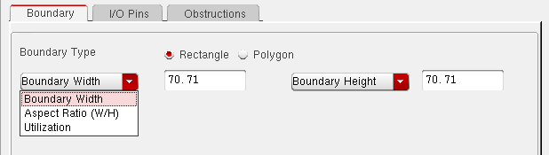
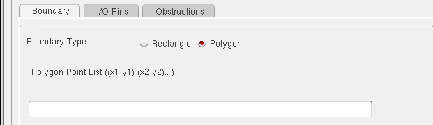

Changing the Boundary of Soft Blocks
You can change any fixed or non-fixed rectangular boundary or any polygonal boundary by adjusting the parameters that are defined in the Edit Soft Blocks form.
- Changing a Rectangular Boundary in Fixed Mode
- Changing a Rectangular Boundary of a Soft Block in Non-Fixed Mode
- Changing a Polygonal Boundary
Changing a Rectangular Boundary in Fixed Mode
Fixed mode refers to a boundary defined by specifying a combination of width, height, and aspect ratio for the block in question. The boundary is considered fixed because it is defined by two fixed variables, and is not derived by estimating the area of the block.
To change a rectangular boundary in fixed mode,
-
From the layout window menu bar, choose Edit – Soft Blocks.
The Edit Soft Blocks form is displayed. - Select the blocks whose boundary you want to change.
- In the Boundary tab, check the Rectangle radio button.
-
Choose one of the following.
- Aspect Ratio (W/H) in the first cyclic field and Height in the second. In this case, the boundary width is calculated from the boundary height and aspect ratio.
- Aspect Ratio (W/H) in the first cyclic field and Width in the second. In this case, the boundary height is calculated from the boundary width and the aspect ratio.
- Width in the first cyclic field and Height in the second. In this case, these values you type in are used to create the boundary.
When you choose any of the above combinations, the form changes to hide the other fields.
The picture below show a rectangular boundary specified using the width and height options.

Changing a Rectangular Boundary of a Soft Block in Non-Fixed Mode
Non-fixed mode refers to a boundary defined by estimating the area required by the block in question. The boundary is non-fixed because it is derived from only one fixed parameter (such as the height or width), an area utilization factor, and an area estimation function.
To change a rectangular boundary in non-fixed mode,
-
From the layout window menu bar, choose Edit – Soft Blocks.
The Edit Soft Blocks form is displayed. - Select the blocks whose boundary you want to change.
- In the Boundary tab, check the Rectangle radio button.
-
Use the two cyclic lists to specify the utilization factor and one fixed parameter for the block. The table below lists the valid combinations in non-fixed mode.
-
Choose an Area Calculation Method.
The area calculation methods available depend on the cell type of the soft blocks. - When the area has been estimated, click OK or Apply to accept the changes to the boundary.
Manual Area Estimation
Use Manual area estimation if you know the block area. Type the area into the Area field.
The boundary of the soft block modified based on the value specified in the second cyclic field.
For example, consider a block where the Utilization is specified as 1 and the Boundary Height is 63 units. If you increase the area from 1000 to 2000 units, the width of the place and route boundary increases because the value of height is fixed at 63.
Similarly, if the value of the Boundary Width field is specified, the height of the block would be modified to arrive at the specified area.
Internal Estimators
Use Internal Estimator to have the system calculate the area of a soft block of type softMacro based on
- The sum of all the place and route boundaries of the objects inside the soft block
- The sum of all the bounding boxes of the components contained in the soft block.
Choose either PRBoundary Based or BBox Based from the cyclic field and click the Estimate button to calculate the area.
User Defined Estimators
User Defined Estimator lets you specify your own area calculation function using the framework described in Creating and Registering a User-Defined Area Estimation Function. (The picture below shows no user-defined function registered.)
You can view all the registered area estimators in the Area Estimator List. Select the estimators you want to use and click the Estimate button to calculate the area.
Area Per Gate Estimation
Use Area Per Gate to calculate the area for a soft block of type blockBlackBox. You enter the area per gate and the gate count and the system calculates the area based on the following formula.
Area = Area Per Gate * Gate Count
The Area field is grayed out in this mode.
Changing a Polygonal Boundary
You can create or change a polygonal place and route boundary by specifying the points of each of the vertices of the polygon.
To change a polygonal boundary,
-
From the layout window menu bar, choose Edit – Soft Blocks.
The Edit Soft Blocks form is displayed. - Select the blocks whose boundary you want to change.
-
In the Boundary tab, check the Rectangle radio button.
The form changes as shown in the figure below.
 - Specify the points for each of the vertices of the polygon in the Polygonal Point List text box.
- Click OK or Apply to change the boundary.
Related Topics
Return to top